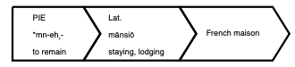
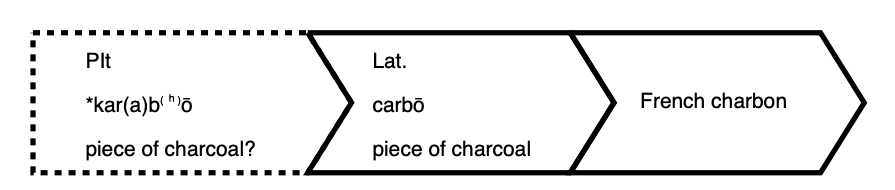
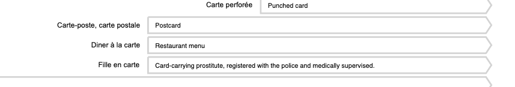
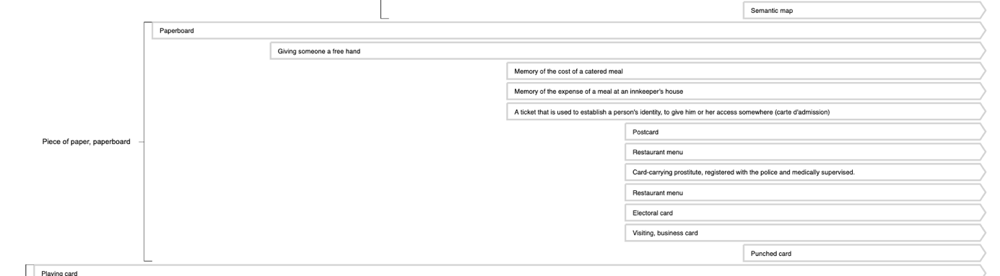
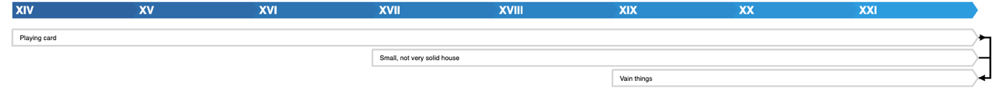

Pygmalion, a tool to visualise the diachronic description of meaning
Pygmalion is available in three versions. Pygmalion-simple 1.0, the basic version of the tool, Pygmalion-colour 1.0 which enables to add colour-coded analytical categories defined by the user and Pygmalion-modal 1.0 which is specifically designed for drawing diachronic maps of modal markers or concepts. The working principles of Pygmalion-simple, Pygmalion-colour and Pygmalion-modal are identical. Mainly meant as a tool to represent the diachronic evolution of meaning as attested by philological evidence, Pygmalion is very flexible and can be easily adapted to other approaches, e.g. lexicographic or typological. Moreover, Pygmalion can work with any language and script, so opening the possibility to compare the evolution of meaning in different languages.
To quickly learn how to work with Pygmalion and draw your own maps, please read the tutorial in this section. You will also find some ideas about how to use Pygmalion.
All versions as well as the code are freely available as open access resources. Feel free to share with us your comments and critics. The WoPoss team hopes to be able to continue to improve the tool in the future.
Pygmalion was created by Francesca Dell’Oro (conceptualisation, general supervision, testing), Loris Rimaz (conceptualisation, main development, testing),* Helena Bermúdez Sabel (conceptualisation, development, testing) and Paola Marongiu (testing) in the framework of the WoPoss project. It is released under a GPLv3 licence. Please cite our work as follows:
- Dell’Oro, Francesca – Rimaz, Loris – Bermúdez Sabel, Helena & Marongiu, Paola (2020). Pygmalion-simple 1.0. A tool to draw interactive and diachronic maps. WoPoss. A World of Possibilities. Swiss National Science Foundation.
- Dell’Oro, Francesca – Rimaz, Loris – Bermúdez Sabel, Helena & Marongiu, Paola (2020). Pygmalion-modal 1.0. A tool to draw interactive and diachronic maps of modality. WoPoss. A World of Possibilities. Swiss National Science Foundation
- Dell’Oro, Francesca; Rimaz, Loris; Bermúdez Sabel, Helena; Marongiu, Paola (2021). Pygmalion-colour 1.0. A tool to draw interactive and diachronic maps. WoPoss. A World of Possibilities. Swiss National Science Foundation.
We wish to express our gratitude to Adam Gitner (TLL project) for his valuable feedback on Pygmalion-simple.
How to use Pygmalion-simple
Pygmalion works on the base of two forms: the first one collects ‘semantic informations’, the second one describes the ‘semantic relations’ between meanings.
The first form contains mandatory as well as non-mandatory fields.
- Headword. This is the word or concept to be described (e.g. French ‘carte’, the Romance derivatives of Latin ‘filia’). This field is mandatory.
- Etymology. This field is mandatory. There are three options: ‘proceed without etymology’,
if the etymology
is not
important for the description of the headword; ‘flag etymology as unknown’, if the etymology is not known;
‘add
etymological steps’. The last option allows the user to describe each possible phase, e.g. from
Proto-Indo-European (phase 1) to French (phase 3) through Latin (phase 2). For each phase the user can
specify a
language stage (PIE etc.), insert the corresponding forms (*mn-eh1- etc.) and add a
short definition (‘to
remain’ etc.), as shown here:
 The user can indicate whether the etymology is certain or rather uncertain for each phase. Uncertainty results in a dashed line. ‘Etymology is certain’ is the option checked by default.
 - Date format. The user chooses the format of the date: centuries, decades or specific years. While the chronological line in the map indicates only the centuries, whatever the choice of the user, each arrow corresponding to a certain meaning will be positioned inside the space of a century according to the specific (and relative) decade or year of emergence. Please notice that once you have chosen a format, all entries must be in that format.
- Meaning(s). This field is composed of four sub-fields:
- ‘meaning/function/use’;
- ‘collocation’;
- ‘semantic group (or other kind of groups)’;
- ‘description’.
While 1 is mandatory, 2 and 3 are not. 4 comprises other three sub-sub-fields:
- ‘date of meaning emergence’,
- ‘date of meaning disappearance’ and
- ‘first attestation’.
Only A is mandatory.
The user can describe the meaning, the function or the use of a word or concept indicated in the headword. This sub-field (meaning/function/use) is mandatory. The user can also specify whether there are specific collocations and/or whether the meaning belongs to a specific (semantic) group. E.g. in the map for French ‘carte’ the meaning ‘restaurant menu’ corresponds to a collocation ‘(diner) à la carte’.
On the other hand, the meaning ‘restaurant menu’ belongs to the general meaning ‘piece of paper, paperboard’:
According to his/her own interest, the user can create any kind of group (e.g. syntactic).
In the sub-field ‘description’ the user must indicate the ‘date of meaning emergence’ according to the previously chosen format (see under ‘date format’). Inside ‘first attestation’ the user can indicate the reference of the first attestation of a meaning with or without the text. The user can always add a new meaning by clicking on the ‘add new meaning’ button.
After completing the first form, the user can submit it by clicking on the button ‘submit form’. If all is fine, a ‘success’ message will appear. If something went wrong, the user is notified with an ‘error’ message and the indication of where the problem has been located (the wrongly-filled fields will appear in red). Once the first form is correctly submitted, the second form will appear automatically.
The second form contains no mandatory fields. In this form the user can specify the semantic relationships between the meanings and/or the collocations and their directionality. Each meaning or collocation previously entered in the first form can now be put in relation with any other previously entered meaning or collocation. The user can specify a direction ‘from’ or ‘to’: whatever the choice, the reciprocal relation will be taken into account automatically. The option ‘relationship is certain’ is checked by default. By unchecking it, the user indicates that the relationship is not certain. Certainty results in a continuous line, uncertainty in a dashed one.
If the user is not interested in making explicit any relations between the meanings and/or collocations or if the user finishes to describe the relationships, s/he can click on the button ‘submit form’ and the semantic maps will appear.
How to use Pygmalion-colour and Pygmalion-modal
Pygmalion-colour and Pygmalion-modal were specifically conceived to improve the potential of their 'brother' Pygmalion-simple. Pygmalion-colour allows a better visualisation of complex meaning descriptions through the use of colour, while Pygmalion-modal is specifically conceived to explore modality whatever the theoretical framework, thus adapting to various nomenclatures. Both work exactly as Pygmalion-simple. The only two differences consist in the conception of the subfield ‘Description’ and in the presence of the button ‘Add new (modal) description’.
In Pygmalion-modal, the subfield ‘Description’ contains the field ‘modality type’. There, the user can choose between a pre-established list of possibilities – i.e. ‘not modal’, ‘modal: deontic’, ‘modal: dynamic’, ‘modal: epistemic’, ‘premodal’ (i.e. the meaning belongs to a cross-linguistic group of meanings from which a modal reading developed), ‘postmodal’ (i.e. the meaning belongs to a cross-linguistic group of meanings into which a modal reading developed). If nothing suits the needs of the user, s/he can add his/her own types of modality, by clicking on the option ‘Add a type of modality…’ at the end of the list. To choose a type of modality (or ‘not modal’) is mandatory. In the final maps the different types of modality are colour-coded. The user can also indicate whether the modal interpretation is certain or not. Certainty is the default option.
In line with the importance given to semantic ambiguity in the WoPoss project, the user can add different modal descriptions for each reading of a meaning, e.g. the same meaning ‘must’ can be read as ‘dynamic’, ‘deontic’ and ‘epistemic’. Pygmalion being very flexible, the user can also decide to create three different ‘meanings’ for each of these readings.
In Pygmalion-colour, the subfield ‘Description’ contains the field ‘analysis’ where the user can add any analytical category. In the final maps the different categories are automatically colour-coded. As with the other versions, the user can also indicate whether the analysis is certain or not. Certainty is the default option. In the same meaning/function can be assigned to more than one category, the user can click on 'Add new description' and create a new entry with a different category.
The interactive maps
Pygmalion generates two interactive maps, both chronological. The upper one contains all information entered by the user. The lower one is a graph which allows to better see the relationships between the meanings (or collocations). The depth of the colour indicates the diachrony: the darker the colour, the more ancient the meaning.
The user has three options for the visualisation: the meanings can appear 1) in chronological order, 2) gathered according to the entered groups or 3) gathered according to the entered collocations. Please be aware that collocations won’t appear explicitly if you choose the ‘chronological’ or the ‘group’ option.
In the upper map the relations can be visualised only in relation to an input or output meaning. E.g. The general meaning ‘playing card’ is at the base of the meaning ‘small, not very solid house’ in the collocation ‘un château de cartes’, from which in turn the meaning ‘vain things’ derives.
To return to the previous visualisation of the map, the user must double-click on a meaning. The first attestation of each meaning is visible – as entered in the first form – when hovering the mouse over a meaning.
Sharing and re-using data with Pygmalion
Once a user has created a map, s/he can export the data in JSON format through the ‘Export data map’ button’ and/or save the map as an SVG file or as a PNG file through the dedicated buttons. Data can be shared and re-used according to the above-specified licence. Once a user receives a map data, s/he can import it through the ‘Import map data’ button. Map data can be imported from this address.
Example gallery
- All the diachronic maps of modal markers developed by the WoPoss team are available here.
- Other examples:
- CARAT_fr (French) by Francesca Dell’Oro.
- CARTE_fr (English) by Francesca Dell’Oro.
- CARTE_fr (Spanish) by Francesca Dell’Oro.
- FILIA_es/fr/it (English) by Francesca Dell’Oro, Paola Marongiu and Helena Bermúdez Sabel.
- FILIA_es/fr/it (Spanish) by Francesca Dell’Oro, Paola Marongiu and Helena Bermúdez Sabel.
Troubleshooting
- If the import button does not work, please clean the browser cache before trying again.
[*] Loris Rimaz was engaged to create the code of Pygmalion thanks to the financial contribution of the Rectorate of the University of Lausanne.